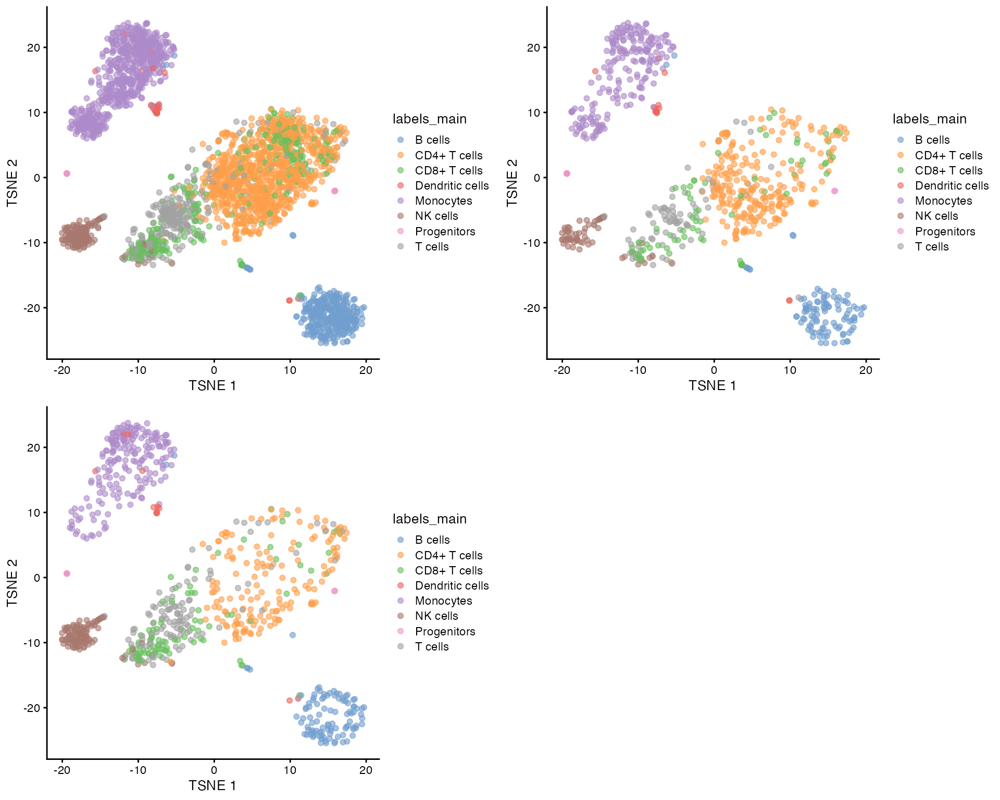
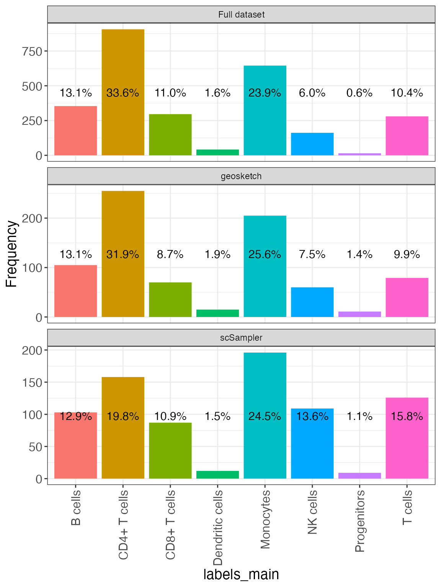
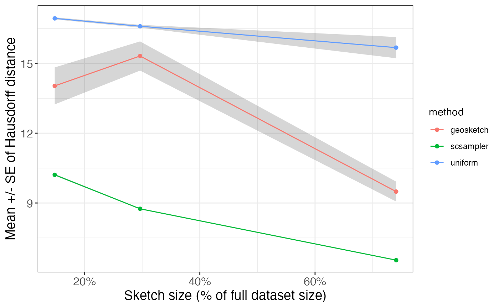

sketchR.RmdThis vignette showcases the main functionalities of the
sketchR package, and illustrates how it can be used to
generate a subsample of a dataset using the geometric
sketching/subsampling algorithms and implementations proposed by Hie et al. (2019) and Song et al. (2022), as well as create a set of
diagnostic plots.
We start by loading the required packages and preparing an example data set.
suppressPackageStartupMessages({
library(sketchR)
library(TENxPBMCData)
library(scuttle)
library(scran)
library(scater)
library(SingleR)
library(celldex)
library(cowplot)
library(SummarizedExperiment)
library(SingleCellExperiment)
})We will use the PBMC3k data set from the TENxPBMCData Bioconductor package for illustration. The chunk below prepares the data set by calculating log-transformed normalized counts, finding highly variable genes, performing dimensionality reduction and predicting cell type labels using the SingleR package.
## Load data
pbmc3k <- TENxPBMCData::TENxPBMCData(dataset = "pbmc3k")
#> snapshotDate(): 2022-10-31
#> see ?TENxPBMCData and browseVignettes('TENxPBMCData') for documentation
#> loading from cache
## Set row and column names
colnames(pbmc3k) <- paste0("Cell", seq_len(ncol(pbmc3k)))
rownames(pbmc3k) <- scuttle::uniquifyFeatureNames(
ID = SummarizedExperiment::rowData(pbmc3k)$ENSEMBL_ID,
names = SummarizedExperiment::rowData(pbmc3k)$Symbol_TENx
)
## Normalize and log-transform counts
pbmc3k <- scuttle::logNormCounts(pbmc3k)
## Find highly variable genes
dec <- scran::modelGeneVar(pbmc3k)
top.hvgs <- scran::getTopHVGs(dec, n = 2000)
## Perform dimensionality reduction
set.seed(100)
pbmc3k <- scater::runPCA(pbmc3k, subset_row = top.hvgs)
pbmc3k <- scater::runTSNE(pbmc3k, dimred = "PCA")
## Predict cell type labels
ref_monaco <- celldex::MonacoImmuneData()
#> snapshotDate(): 2022-10-31
#> see ?celldex and browseVignettes('celldex') for documentation
#> loading from cache
#> see ?celldex and browseVignettes('celldex') for documentation
#> loading from cache
pred_monaco_main <- SingleR::SingleR(test = pbmc3k, ref = ref_monaco,
labels = ref_monaco$label.main)
pbmc3k$labels_main <- pred_monaco_main$labels
dim(pbmc3k)
#> [1] 32738 2700The geosketch() function performs geometric sketching by
calling the geosketch python package. The
output is a vector of indices that can be used to subset the full
dataset. The provided seed will be propagated to the python code to
achieve reproducibility.
idx800gs <- geosketch(SingleCellExperiment::reducedDim(pbmc3k, "PCA"),
N = 800, seed = 123)
head(idx800gs)
#> [1] 4 5 10 11 12 16
length(idx800gs)
#> [1] 800Similarly, the scsampler() function calls the
scSampler python package
to perform subsampling.
idx800scs <- scsampler(SingleCellExperiment::reducedDim(pbmc3k, "PCA"),
N = 800, seed = 123)
head(idx800scs)
#> [1] 1079 644 1494 1278 5 391
length(idx800scs)
#> [1] 800To illustrate the result of the subsampling, we plot the tSNE representation of the original data as well as the two subsets (using the tSNE coordinates derived from the full dataset).
cowplot::plot_grid(
scater::plotTSNE(pbmc3k, colour_by = "labels_main"),
scater::plotTSNE(pbmc3k[, idx800gs], colour_by = "labels_main"),
scater::plotTSNE(pbmc3k[, idx800scs], colour_by = "labels_main")
)
We can also illustrate the relative abundance of each cell type in the full data and in the subsets, respectively.
compareCompositionPlot(SummarizedExperiment::colData(pbmc3k),
idx = list(geosketch = idx800gs,
scSampler = idx800scs),
column = "labels_main")
sketchR provides a convenient function to plot the
Hausdorff distance between the full dataset and the subsample, for a
range of sketch sizes.
hausdorffDistPlot(mat = SingleCellExperiment::reducedDim(pbmc3k, "PCA"),
Nvec = c(400, 800, 2000), seed = 123,
Nrep = 3, methods = c("geosketch", "scsampler", "uniform"))
sessionInfo()
#> R version 4.2.2 (2022-10-31)
#> Platform: x86_64-apple-darwin17.0 (64-bit)
#> Running under: macOS Big Sur ... 10.16
#>
#> Matrix products: default
#> BLAS: /Library/Frameworks/R.framework/Versions/4.2/Resources/lib/libRblas.0.dylib
#> LAPACK: /Library/Frameworks/R.framework/Versions/4.2/Resources/lib/libRlapack.dylib
#>
#> locale:
#> [1] en_US.UTF-8/en_US.UTF-8/en_US.UTF-8/C/en_US.UTF-8/en_US.UTF-8
#>
#> attached base packages:
#> [1] stats graphics utils stats4 methods base
#>
#> other attached packages:
#> [1] cowplot_1.1.1 celldex_1.8.0
#> [3] SingleR_2.0.0 scater_1.26.1
#> [5] ggplot2_3.4.0 scran_1.26.0
#> [7] scuttle_1.8.1 TENxPBMCData_1.16.0
#> [9] HDF5Array_1.26.0 rhdf5_2.42.0
#> [11] DelayedArray_0.24.0 Matrix_1.5-3
#> [13] SingleCellExperiment_1.20.0 SummarizedExperiment_1.28.0
#> [15] Biobase_2.58.0 GenomicRanges_1.50.1
#> [17] GenomeInfoDb_1.34.3 IRanges_2.32.0
#> [19] S4Vectors_0.36.0 BiocGenerics_0.44.0
#> [21] MatrixGenerics_1.10.0 matrixStats_0.63.0
#> [23] sketchR_0.1.6 BiocStyle_2.26.0
#>
#> loaded via a namespace (and not attached):
#> [1] AnnotationHub_3.6.0 BiocFileCache_2.6.0
#> [3] systemfonts_1.0.4 igraph_1.3.5
#> [5] BiocParallel_1.32.1 digest_0.6.30
#> [7] htmltools_0.5.3 viridis_0.6.2
#> [9] fansi_1.0.3 magrittr_2.0.3
#> [11] memoise_2.0.1 ScaledMatrix_1.6.0
#> [13] cluster_2.1.4 limma_3.54.0
#> [15] Biostrings_2.66.0 pkgdown_2.0.6.9000
#> [17] colorspace_2.0-3 blob_1.2.3
#> [19] rappdirs_0.3.3 ggrepel_0.9.2
#> [21] textshaping_0.3.6 xfun_0.35
#> [23] dplyr_1.0.10 crayon_1.5.2
#> [25] RCurl_1.98-1.9 jsonlite_1.8.3
#> [27] glue_1.6.2 gtable_0.3.1
#> [29] zlibbioc_1.44.0 XVector_0.38.0
#> [31] BiocSingular_1.14.0 Rhdf5lib_1.20.0
#> [33] scales_1.2.1 DBI_1.1.3
#> [35] edgeR_3.40.0 Rcpp_1.0.9
#> [37] viridisLite_0.4.1 xtable_1.8-4
#> [39] reticulate_1.26 dqrng_0.3.0
#> [41] bit_4.0.5 rsvd_1.0.5
#> [43] metapod_1.6.0 httr_1.4.4
#> [45] dir.expiry_1.6.0 ellipsis_0.3.2
#> [47] farver_2.1.1 pkgconfig_2.0.3
#> [49] sass_0.4.4 dbplyr_2.2.1
#> [51] here_1.0.1 locfit_1.5-9.6
#> [53] utf8_1.2.2 labeling_0.4.2
#> [55] tidyselect_1.2.0 rlang_1.0.6
#> [57] later_1.3.0 AnnotationDbi_1.60.0
#> [59] munsell_0.5.0 BiocVersion_3.16.0
#> [61] tools_4.2.2 cachem_1.0.6
#> [63] cli_3.4.1 generics_0.1.3
#> [65] RSQLite_2.2.19 ExperimentHub_2.6.0
#> [67] evaluate_0.18 stringr_1.4.1
#> [69] fastmap_1.1.0 yaml_2.3.6
#> [71] ragg_1.2.4 grDevices_4.2.2
#> [73] knitr_1.41 bit64_4.0.5
#> [75] fs_1.5.2 purrr_0.3.5
#> [77] KEGGREST_1.38.0 sparseMatrixStats_1.10.0
#> [79] mime_0.12 compiler_4.2.2
#> [81] beeswarm_0.4.0 filelock_1.0.2
#> [83] curl_4.3.3 png_0.1-7
#> [85] interactiveDisplayBase_1.36.0 tibble_3.1.8
#> [87] statmod_1.4.37 bslib_0.4.1
#> [89] stringi_1.7.8 highr_0.9
#> [91] basilisk.utils_1.10.0 desc_1.4.2
#> [93] lattice_0.20-45 bluster_1.8.0
#> [95] vctrs_0.5.1 pillar_1.8.1
#> [97] lifecycle_1.0.3 rhdf5filters_1.10.0
#> [99] BiocManager_1.30.19 jquerylib_0.1.4
#> [101] BiocNeighbors_1.16.0 bitops_1.0-7
#> [103] irlba_2.3.5.1 httpuv_1.6.6
#> [105] R6_2.5.1 promises_1.2.0.1
#> [107] gridExtra_2.3 vipor_0.4.5
#> [109] codetools_0.2-18 assertthat_0.2.1
#> [111] rprojroot_2.0.3 withr_2.5.0
#> [113] datasets_4.2.2 GenomeInfoDbData_1.2.9
#> [115] parallel_4.2.2 grid_4.2.2
#> [117] beachmat_2.14.0 basilisk_1.10.2
#> [119] rmarkdown_2.18 DelayedMatrixStats_1.20.0
#> [121] Rtsne_0.16 shiny_1.7.3
#> [123] ggbeeswarm_0.6.0